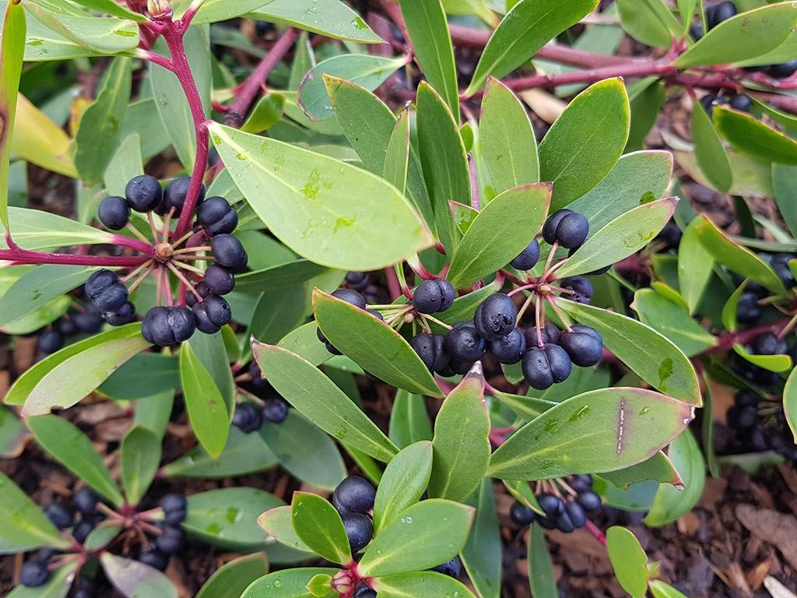

|  |
Overview
The Pepper Berry plant which is also know as the Tasmannia lanceolata, is a herb native to Australia. It grows small, dark, purple coloured berries which not only have an aesthetically appealing look, but are also very unique and delicious with their flavour, having a spicy and peppery tone. The plant itself has thick, dry leaves which are held onto red stems and branches which have a sharp and fuzzy texture.
|
|
Where does it grow?
The Pepper Berry requires a cool climate (eg in temperate forests), and well-drained, acidic soils that are rich in organic matter in order to grow and flourish. This such climate can be found in the Southeast of Australia, particularly in Tasmania and parts of Victoria. Because it is well-suited to shaded areas and can tolerate frost, it can adapt to various climate conditions within its native range.
Nutritional value identified by First Nations People
The benefits of the Pepper Berry plant had been noticed by the First Nations. They did not just use it for eating, but they also used it for healing inflammation and other ailments. After years of scientific research, we now know that the berry has polygodial and anthocyanins, which actually benefit inflammation and relieve stress.
How we use (your fruit) today
Since pepper berry’s have a spicy/peppery flavoured, due to this characteristic, it is used in certain sauces and food products to add taste. Additionally, they are also used in medical products, where they support immune function and reduce inflammation. The oils from leaves are also used in a lot of skin care products.
Why we should farm (your fruit)
Because of Australia’s unique climate, such as poor soil quality and decreasing rainfall, the pepper berry is a very good fruit to grow. It can flourish in environments which many other plants can’t, and due to this they have recently gotten very popular to grow in the agricultural sector, however, there still needs to be more farmers growing the pepper berry. By incorporating this native superfood into their crop rotation, farmers can diversify their offerings, meet consumer demand, and help preserve traditional knowledge.
|